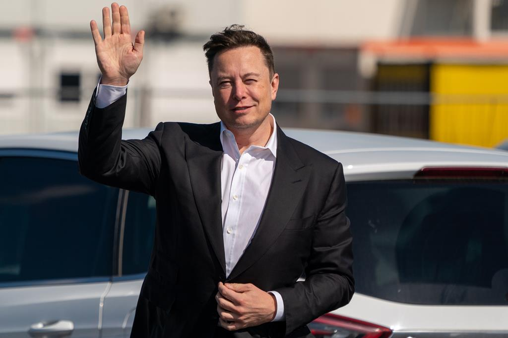
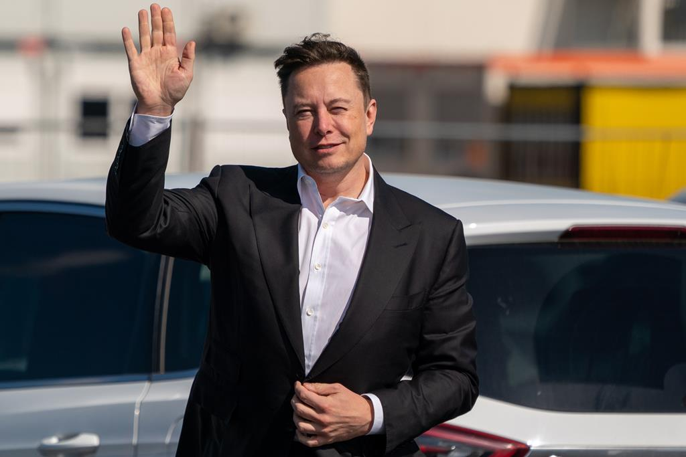

Musk diz que SpaceX não pode financiar Starlink indefinidamente na Ucrânia
O bilionário ativou a rede de satélites na Ucrânia no final de fevereiro, depois que os serviços de internet foram interrompidos por causa da invasão da Rússia.

Transmissão do primeiro debate do 2 turno
Transmissão do primeiro debate do 2 turno
Transmissão do primeiro debate do 2 turno
Transmissão do primeiro debate do 2 turno
Transmissão do primeiro debate do 2 turno
Transmissão do primeiro debate do 2 turno
Transmissão do primeiro debate do 2 turno
Transmissão do primeiro debate do 2 turno
Transmissão do primeiro debate do 2 turno
O bilionário ativou a rede de satélites na Ucrânia no final de fevereiro, depois que os serviços de internet foram interrompidos por causa da invasão da Rússia.
13/10/2022
Elon Musk disse nesta sexta-feira (14) que a SpaceX não pode financiar "indefinidamente" o serviço de internet por satélite Starlink na Ucrânia depois que uma reportagem indicou que sua empresa de foguetes havia pedido ao Pentágono para pagar as doações.
O comentário de Musk, o homem mais rico do mundo, sobre a questão do apoio ao serviço de internet na Ucrânia vem depois que ele irritou muitos ucranianos com uma proposta para acabar com a guerra travada contra a Rússia, sugerindo que o país deveria entregar alguns territórios para Moscou.
"A SpaceX não está pedindo para recuperar despesas passadas, mas também não pode financiar o sistema existente indefinidamente, e enviar vários milhares de terminais a mais que têm uso de dados até 100 vezes maior do que as residências típicas. Isso não é razoável", disse Musk no Twitter.
O bilionário disse que a Starlink estava gastando quase 20 milhões de dólares por mês para manter os serviços de satélite na Ucrânia. Ele disse recentemente que a SpaceX gastou cerca de 80 milhões de dólares para habilitar e apoiar o serviço de internet no país.
A rede americana CNN informou que a SpaceX enviou uma carta ao Pentágono no mês passado dizendo que não poderia continuar a financiar o serviço Starlink na Ucrânia e pode parar o financiamento, a menos que os militares norte-americanos ajudem a empresa com dezenas de milhões de dólares por mês.
A SpaceX não respondeu a um pedido de comentário feito pela agência de notícias Reuters até a última atualização dessa reportagem.
O conselheiro do presidente da Ucrânia, Mykhailo Podolyak, disse que o governo ucraniano encontrará uma solução para manter o sistema Starlink funcionando no país.
Musk ativou a Starlink na Ucrânia no final de fevereiro, depois que os serviços de internet foram interrompidos por causa da invasão da Rússia. Desde então, a SpaceX forneceu milhares de terminais.
O vice primeiro-ministro da Ucrânia, Mykhailo Fedorov, disse esta semana que os serviços da Starlink ajudaram a restaurar a infraestrutura de energia e comunicações em áreas críticas após mais de 100 ataques de mísseis russos.
Musk atraiu críticas generalizadas dos ucranianos sobre sua ideia para a paz na região. Ele propôs publicamente que a Ucrânia entregue permanentemente a região da Crimeia à Rússia, que novos referendos sejam realizados sob os auspícios da ONU para determinar o destino do território controlado pela Rússia e que a Ucrânia concorde com a neutralidade.